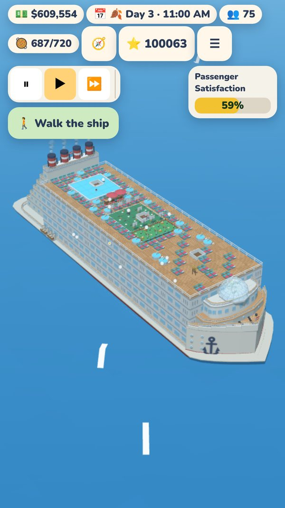
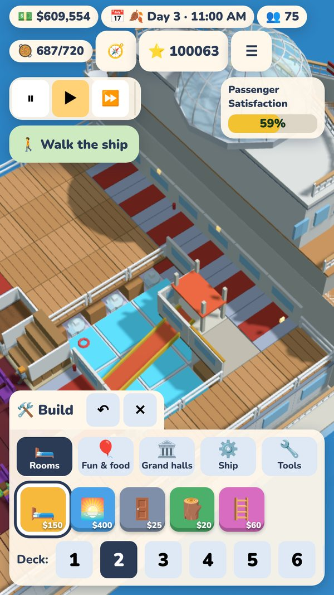
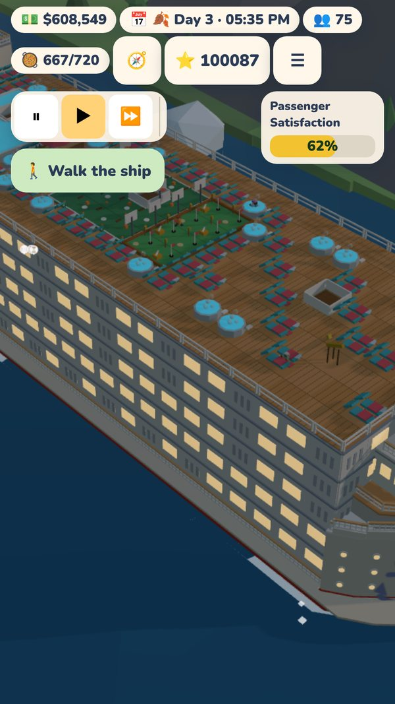

Northern Voyage Tycoon: build a cozy cruise ship and sail the icy northern fjords.
Start with a tiny ferry and grow it, deck by deck, into a floating resort and finally a 24-cell-long ocean liner with six decks. Lay out rooms with real doors, corridors and stairs, add heaters and generators, and keep your guests warm, fed and happy while you dodge icebergs, watch orcas and whales, and dock at gold-rush towns.



Place cabins, suites, buffets, cocoa stands, a heated pool, spa, cinema, arcade, library, sun bar, sports court, mini golf and more. Rooms have walls and doors, so plan hallways so guests can get where they need to go. Grand halls spread over two decks: a theatre, a banquet hall, a garden atrium and a casino lounge.
Step inside as the captain. Climb the stairs between decks, sit in the audience, take a bow on stage, ride the slide, play the casino tables and talk to your guests to see what they need.
Families, couples, seniors, kids, foodies and adventurers. VIP guests arrive with little stories of their own, reviews bring more guests, and a guest book keeps track of the ones who come back.
Sail three northern routes and dock at ports with their own harbours and shore excursions, with 3D scenes you can look around. Buy goods where they are made and sell them where they are wanted. Weather, seasons, fog, snow squalls and auroras change the voyage, and a forecast helps you plan.